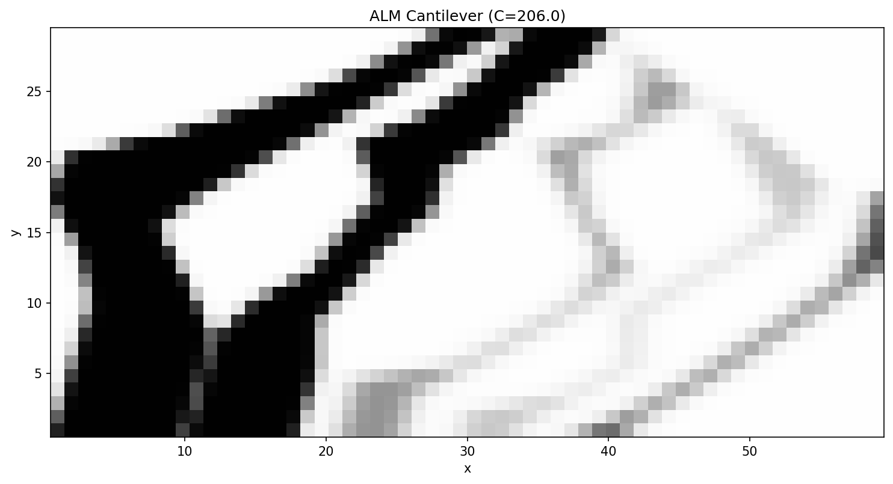

ALM Cantilever (Overhang Constraints)¶
This is an interactive Jupyter Notebook implementation. The optimization runs for 50 iterations to ensure proper convergence.
[ ]:
import dolfin as df
from dolfin_adjoint import Constant, DirichletBC, RectangleMesh, stop_annotating
import numpy as np
import gemseo
from gemseo import create_scenario
from ggp.geometry.factory import GeometryFactory
from ggp.physics.factory import PhysicsFactory
from ggp.gemseo_wrappers.macro_discipline import GGPMacroDiscipline
from ggp.utils.alm_utils import create_alm_overhang_constraints
import matplotlib.pyplot as plt
import os
[ ]:
def run_alm_cantilever():
L, H = 60.0, 30.0
nelx, nely = 60, 30
volfrac = 0.3
num_layers = 30
comp_per_layer = 1
layer_height = H / num_layers
alpha_deg = 45.0 # Max overhang angle
# Mesh and Spaces
mesh = RectangleMesh(df.Point(0, 0), df.Point(L, H), nelx, nely)
V_u = df.VectorFunctionSpace(mesh, "CG", 1)
# BCs: Left fixed
def left_boundary(x, on_boundary): return on_boundary and df.near(x[0], 0.0)
bc = [DirichletBC(V_u, Constant((0.0, 0.0)), left_boundary)]
# Load: Bottom right corner
boundaries = df.MeshFunction("size_t", mesh, mesh.topology().dim() - 1)
boundaries.set_all(0)
class BottomRight(df.SubDomain):
def inside(self, x, on_boundary): return df.near(x[0], L) and df.near(x[1], 0.0, 1.0)
BottomRight().mark(boundaries, 1)
ds_load = df.Measure("ds", domain=mesh, subdomain_data=boundaries)
L_rhs_vec = Constant((0.0, -1.0))
# Initialize ALM Mapper
mapper = GeometryFactory.create_mapper("2D_ALM", mesh=mesh, num_layers=num_layers,
components_per_layer=comp_per_layer, layer_height=layer_height)
solver = PhysicsFactory.create_solver("Elasticity_2D", V_u=V_u, bc=bc, ds_load=ds_load, L_rhs_vec=L_rhs_vec)
x_init = mapper.get_initial_design(L, H)
# Bounds for [xc, width, mc]
lb = np.array([0.0, 1.0, 0.0] * mapper.num_components)
ub = np.array([L, L, 1.0] * mapper.num_components)
# Discipline
disc = GGPMacroDiscipline(mapper, solver, x_init, lb, ub, mesh_area=L*H, name="GGP_ALM_Cantilever")
design_space = gemseo.algos.design_space.DesignSpace()
design_space.add_variable("x_vars", size=len(x_init), lower_bound=lb, upper_bound=ub, value=x_init)
scenario = create_scenario(disciplines=[disc], objective_name="compliance", design_space=design_space, formulation_name="DisciplinaryOpt")
scenario.add_constraint("volume", "ineq", positive=False, value=volfrac)
# Add Overhang Constraints
A_over, b_over = create_alm_overhang_constraints(num_layers, comp_per_layer, layer_height, alpha_deg)
# We can use GEMSEO's LinearConstraint
# However, to be simple and reliable, we'll just implement a dedicated Discipline for these constraints
from gemseo.core.discipline.discipline import Discipline
class ALMConstraintsDiscipline(Discipline):
def __init__(self, A, b):
super().__init__(name="ALM_Constraints")
self.A, self.b = A, b
self.input_grammar.update_from_names(["x_vars"])
self.output_grammar.update_from_names(["overhang_cons"])
def _run(self, input_data=None):
x = self.get_inputs_by_name("x_vars")
self.store_local_data(overhang_cons=self.A @ x.flatten() - self.b)
def _compute_jacobian(self, inputs=None, outputs=None):
self.jac = {"overhang_cons": {"x_vars": self.A}}
cons_disc = ALMConstraintsDiscipline(A_over, b_over)
# Re-create scenario with both disciplines
scenario = create_scenario(disciplines=[disc, cons_disc], objective_name="compliance",
design_space=design_space, formulation_name="DisciplinaryOpt")
scenario.add_constraint("volume", "ineq", positive=False, value=volfrac)
scenario.add_constraint("overhang_cons", "ineq", positive=False, value=0.0)
scenario.execute(algo_name="MMA", max_iter=50, max_optimization_step=0.1)
# Post-processing
print("Post-processing ALM result...")
os.makedirs("results", exist_ok=True)
opt_x = scenario.optimization_result.x_opt
for c, v in zip(disc.controls_objs, opt_x):
c.assign(float(v))
with stop_annotating():
V_rho = df.FunctionSpace(mesh, "CG", 1)
rho_opt = df.project(mapper.map_to_density(disc.controls_objs), V_rho)
df.File("results/alm_cantilever_optimized.pvd") << rho_opt
plt.figure(figsize=(10, 5))
df.plot(rho_opt, cmap="Blues")
plt.title(f"ALM Optimized Topology (Overhang {alpha_deg} deg)")
plt.savefig("results/alm_cantilever_optimized.png", dpi=300)
print("Results saved.")
[ ]:
if __name__ == "__main__":
run_alm_cantilever()
Optimized Result¶
